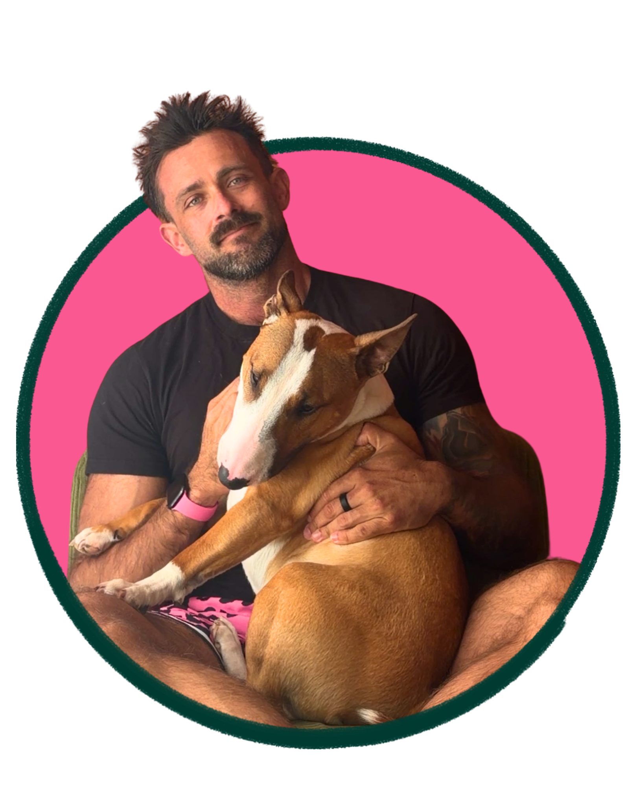

Pelvic floor dysfunction
Tight, weak, overactive or uncoordinated pelvic floor muscles, assessed and retrained like any other muscle group.
Learn more +Expert, evidence-based physiotherapy for pelvic floor, pelvic pain, anorectal, and sexual health issues, and care for LGBTQIA+ and MSM bodies.
Mace is The Big Pink Physio - an APA Titled Sports & Exercise Physiotherapist and Women's and Men's Pelvic Health Physiotherapist on Sydney's Northern Beaches. I bring particular expertise to the athletic hip, pelvis, and pelvic floor, and provide pelvic health (traditionally called pelvic floor) physiotherapy for pelvic pain and dysfunction, including both vaginal and anorectal issues, as well as birth preparation and recovery, and sexual dysfunction.
I care for communities and conditions routinely under-serviced or stigmatised from seeking help, but everyone is welcome.
Common and uncommon - pelvic floor, pregnancy and birth preparation, pain, bladder and bowel, sexual function, and trans+ care. If it's in the pelvis, it's on the plinth.
Tight, weak, overactive or uncoordinated pelvic floor muscles, assessed and retrained like any other muscle group.
Learn more +Anorectal pain, pain with receptive anal intercourse, pudendal-type pain, coccyx and tailbone pain.
Learn more +Urgency, frequency, leakage, incomplete emptying, constipation and control issues.
Learn more +Pain with sex or orgasm, sex-related headache, erectile and ejaculatory concerns, and confidence getting back to sex.
Learn more +Practical, affirming support for binding, packing and tucking, and pelvic-floor preparation and recovery around both top and bottom gender-affirming surgeries. I work alongside your surgical and medical teams to achieve the body euphoria you're seeking.
A thorough, unhurried history and physical assessment, including an internal pelvic examination only if it's clinically useful and you consent. You set the pace.
What to expect +Down-training, strengthening, coordination, biofeedback, and bladder and bowel training, a real training program for muscles you can't see.
How it works +Evidence-based hands-on, hands-off, relaxation, and exercise-based strategies for superficial and deep pelvic pain, no matter your anatomy.
See services +"I've never been interested in being invisible and erased." - Laverne Cox

Evidence-backed assessment, diagnosis, and treatment for all forms of athletic, everyday, and uncommon pelvic health issues. Delivered like a mate by a physio with your best interests at heart.
Tell me what is happening and I'll take it from there, with no doubts and no raised eyebrows.